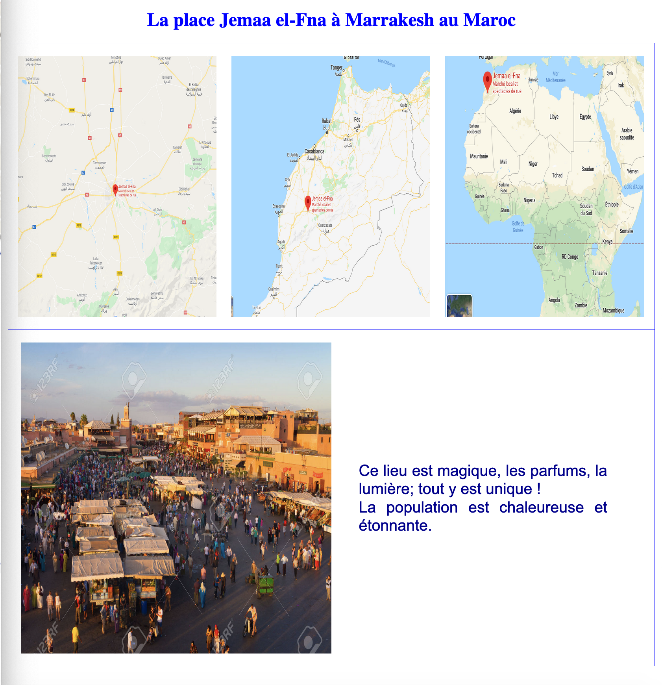

Réalisation d’une page Web selon un cahier des charges
Vous devez réaliser une page web rigoureusement identique à la page représentée ci-dessous à propos d’un lieu de votre choix en respectant le cahier des charges suivant :
- Un titre centré en bleu avec une fonte de 30px
- 3 Google maps de taille 320x420 obtenues par copie d'écran de Google Maps, donnant de gauche à droite une image du lieu dans la ville, puis une image de la ville dans le pays, et enfin une image du pays dans le continent, tout cela dans une boîte centrée de largeur 1040px et de hauteur 420px (marges non comprises), avec des marges latérales de 15px, une marge supérieure, inférieure et des marges intérieures de 20px, et une bordure bleue de 1px.
- 1 photo du lieu de taille 500x500 accompagnée d’un commentaire de quelques lignes écrit en bleu foncé avec une fonte de 25px. Le texte est justifié et il se trouve au niveau du milieu de la photo. Le tout est également dans une boîte de 1040px et de hauteur 500px (marges non comprises), avec une marge intérieure de 20px, une marge de 40px avec le texte, et une bordure bleue de 1px.
On fera un fichier html et un fichier css.
